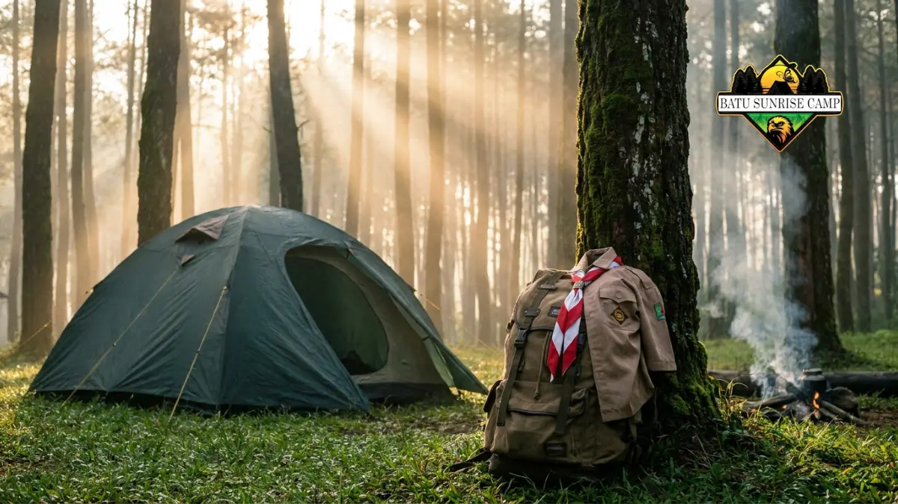

Peralatan kemah untuk acara pramuka mencakup perlengkapan pribadi, perlengkapan regu, dan alat keselamatan yang disiapkan sebelum kegiatan perkemahan agar kegiatan berjalan aman, nyaman, dan sesuai tujuan pendidikan kepramukaan.
Apa Itu Peralatan Kemah untuk Acara Pramuka?
Peralatan kemah untuk acara pramuka adalah kumpulan barang dan perlengkapan yang digunakan peserta didik atau anggota pramuka selama kegiatan berkemah, baik untuk keperluan pribadi, kelompok, maupun kegiatan latihan kepramukaan seperti tali-temali, navigasi, dan permainan lapangan.
Peralatan ini digunakan oleh siswa sekolah dasar hingga menengah, anggota Pramuka Penggalang dan Penegak, serta pembina yang mendampingi kegiatan.
Peralatan biasanya disiapkan sebelum hari pelaksanaan kemah, mengikuti daftar bawaan yang diberikan oleh sekolah atau gugus depan.
Pentingnya peralatan kemah yang tepat terletak pada tiga hal: kenyamanan selama bermalam di alam terbuka, kelancaran kegiatan latihan kepramukaan, dan keselamatan peserta selama berada di lokasi perkemahan.
Peralatan yang tidak lengkap dapat mengganggu jalannya kegiatan, misalnya kedinginan karena tidak membawa jaket, atau kesulitan mendirikan tenda karena perlengkapan tidak sesuai.
Menurut pedoman umum kegiatan kepramukaan yang biasa digunakan gugus depan di Indonesia, perlengkapan kemah idealnya disesuaikan dengan jenis kegiatan, apakah kemah harian (persami) atau kemah dengan durasi lebih panjang, karena kebutuhan logistik keduanya berbeda cukup signifikan.
Apa Saja Kategori Peralatan Kemah Pramuka?
Peralatan kemah pramuka dapat dikelompokkan menjadi perlengkapan pribadi, perlengkapan regu atau kelompok, dan perlengkapan keselamatan, yang masing-masing memiliki fungsi berbeda dalam mendukung kegiatan perkemahan.
Perlengkapan Pribadi
Perlengkapan pribadi adalah barang yang dibawa dan digunakan oleh masing-masing peserta secara individu. Kategori ini meliputi:
- Ransel carrier atau tas kemah
- Pakaian ganti secukupnya, termasuk seragam pramuka
- Alas tidur atau matras lipat
- Sleeping bag atau selimut tebal
- Perlengkapan mandi pribadi
- Alat makan pribadi seperti piring, gelas, dan sendok
- Senter atau headlamp beserta baterai cadangan
- Jas hujan atau ponco

Tenda dan perlengkapan regu untuk kemah pramuka.
Perlengkapan Regu
Perlengkapan regu digunakan bersama oleh satu kelompok peserta selama kegiatan berlangsung. Perlengkapan ini biasanya dibagi tugas pembawaannya agar beban lebih merata. Contohnya meliputi:
- Tenda regu beserta patok dan tali pasak
- Alat masak lapangan seperti kompor portable, panci, dan wajan kecil
- Tali pramuka untuk kegiatan tali-temali dan pionering
- Kompas dan peta lapangan untuk kegiatan penjelajahan
- Bendera regu dan peralatan upacara sederhana
Perlengkapan Keselamatan
Perlengkapan keselamatan wajib disiapkan oleh regu maupun panitia kegiatan untuk mengantisipasi kondisi darurat.
Perlengkapan ini mencakup kotak P3K lengkap dengan obat luka ringan, peluit tanda darurat, serta nomor kontak darurat pembina atau panitia yang mudah diakses selama kegiatan berlangsung.
Bagaimana Cara Memilih Peralatan Kemah yang Tepat untuk Acara Pramuka?
Cara memilih peralatan kemah yang tepat adalah dengan menyesuaikan jenis kegiatan, durasi kemah, kondisi cuaca, serta usia dan kemampuan fisik peserta sebelum menentukan daftar barang bawaan.
Beberapa faktor yang perlu dipertimbangkan saat memilih peralatan kemah pramuka:
- Durasi kegiatan. Kemah satu malam (persami) memerlukan perlengkapan lebih ringkas dibanding kemah beberapa hari yang membutuhkan persediaan pakaian dan logistik lebih banyak.
- Lokasi dan medan. Lokasi perbukitan atau hutan membutuhkan alas kaki dan pakaian yang lebih tahan terhadap medan tidak rata, sementara lokasi lapangan terbuka lebih fleksibel.
- Perkiraan cuaca. Musim hujan menuntut perlengkapan tambahan seperti jas hujan, terpal, dan alas tidur anti lembap.
- Usia dan kemampuan fisik peserta. Untuk siswa sekolah dasar, ransel dan perlengkapan sebaiknya lebih ringan dibanding milik peserta remaja atau dewasa.
- Aturan dari panitia atau sekolah. Sebagian kegiatan kemah pramuka sudah menetapkan daftar barang wajib yang harus diikuti peserta, sehingga daftar pribadi sebaiknya menyesuaikan aturan tersebut lebih dulu.
Apa Saja Kesalahan Umum dalam Menyiapkan Peralatan Kemah Pramuka?
Kesalahan umum dalam menyiapkan peralatan kemah pramuka meliputi membawa barang berlebihan, melupakan perlengkapan keselamatan, dan tidak menyesuaikan pakaian dengan kondisi cuaca di lokasi kemah.
- Membawa barang yang tidak diperlukan sehingga ransel menjadi terlalu berat.
- Melupakan jas hujan atau pakaian hangat, padahal cuaca di lokasi kemah dapat berubah sewaktu-waktu.
- Tidak membawa obat pribadi bagi peserta dengan kondisi kesehatan tertentu.
- Menggunakan alas kaki yang tidak sesuai untuk medan berbukit atau berbatu.
- Tidak memberi label nama pada barang pribadi sehingga mudah tertukar dengan peserta lain.
Tips Praktis Menyiapkan Peralatan Kemah Pramuka
Tips praktis menyiapkan peralatan kemah pramuka mencakup penggunaan checklist tertulis, pengemasan berdasarkan kategori barang, dan uji coba mendirikan tenda sebelum hari pelaksanaan.
- Buat checklist tertulis dan centang setiap barang sebelum berangkat agar tidak ada yang tertinggal.
- Kelompokkan barang berdasarkan fungsi, misalnya pakaian, alat makan, dan perlengkapan mandi dalam kantong terpisah, agar mudah dicari di lokasi.
- Lakukan uji coba mendirikan tenda di rumah sebelum hari kegiatan bila tenda dibawa dari rumah masing-masing.
- Siapkan pakaian cadangan yang cukup, terutama pakaian dalam dan kaus kaki.
- Diskusikan pembagian perlengkapan regu bersama anggota kelompok agar beban bawaan merata dan tidak ada perlengkapan yang terlewat.
Perbandingan Peralatan Kemah untuk Kemah Harian dan Kemah Bermalam Panjang
Perbandingan kebutuhan peralatan antara kemah harian dan kemah bermalam panjang terletak pada jumlah pakaian, kapasitas logistik makanan, dan kelengkapan alat masak yang dibawa.
Kemah harian atau persami umumnya hanya memerlukan satu set pakaian ganti, alas tidur sederhana, dan bekal makanan untuk semalam.
Sementara itu, kemah bermalam panjang memerlukan persediaan pakaian lebih banyak, alat masak yang lebih lengkap, serta perlengkapan tambahan seperti terpal ekstra dan persediaan air bersih yang lebih besar karena durasi kegiatan yang lebih lama.
Kesimpulan
Peralatan kemah untuk acara pramuka sebaiknya disiapkan berdasarkan tiga kategori utama, yaitu perlengkapan pribadi, perlengkapan regu, dan perlengkapan keselamatan.
Menyesuaikan peralatan dengan durasi kegiatan, kondisi cuaca, dan aturan panitia akan membantu kegiatan kemah berjalan lebih lancar dan aman.
Gunakan checklist tertulis dan lakukan persiapan sejak jauh hari agar tidak ada perlengkapan penting yang tertinggal.
FAQ: Pertanyaan yang Sering Diajukan
FAQ (Pertanyaan yang Sering Diajukan)